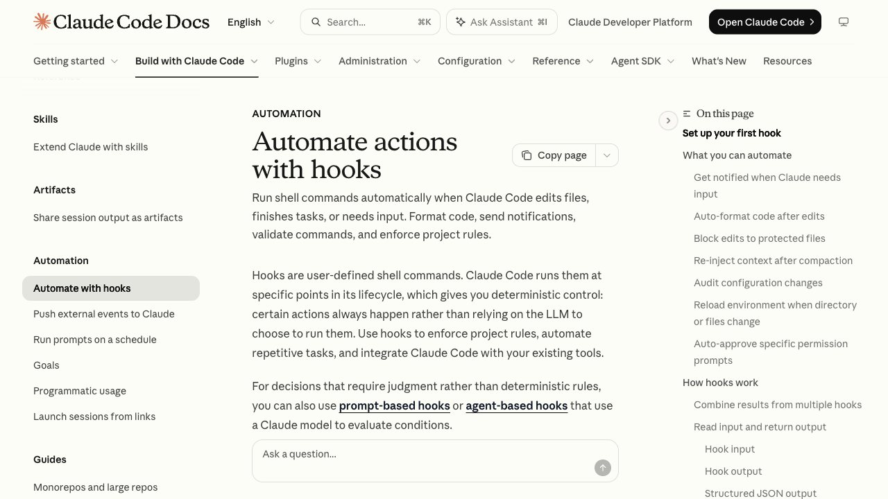

Qué es un hook
Un hook es un comando que Claude Code ejecuta automáticamente en un momento concreto: después de editar un archivo, antes de ejecutar una orden, cuando termina y te espera. Según la documentación oficial, los hooks dan un control determinista: la acción ocurre siempre, en lugar de depender de que el modelo decida hacerla.
Sirven para formatear el código tras cada edición, bloquear cambios en archivos sensibles, avisarte con una notificación o volver a inyectar contexto importante al empezar una sesión.
Una notificación cuando Claude te espera
Abre ~/.claude/settings.json (créalo si no existe) y añade esto. Este ejemplo es para macOS; la documentación oficial incluye también las versiones de Linux y Windows.
{
"hooks": {
"Notification": [
{
"matcher": "",
"hooks": [
{
"type": "command",
"command": "osascript -e 'display notification \"Claude Code needs your attention\" with title \"Claude Code\"'"
}
]
}
]
}
}Después escribe /hooks en Claude Code: verás tu hook en la lista, bajo Notification. Si no te sale ninguna notificación en macOS, abre Ajustes del Sistema > Notificaciones y activa las de Script Editor, porque osascript las envía a través de esa app.
Formatear con Prettier tras cada edición
Este hook usa el evento PostToolUse con el filtro Edit|Write, así que solo se ejecuta tras editar archivos. Pasa el archivo editado a Prettier. Necesita jq instalado (brew install jq en macOS). Ponlo en .claude/settings.json.
{
"hooks": {
"PostToolUse": [
{
"matcher": "Edit|Write",
"hooks": [{ "type": "command", "command": "jq -r '.tool_input.file_path' | xargs npx prettier --write" }]
}
]
}
}Bloquear cambios en archivos protegidos
Para impedir que Claude toque .env, package-lock.json o la carpeta .git/, guarda este script en .claude/hooks/protect-files.sh. Con código de salida 2 el hook bloquea la acción, y Claude recibe el mensaje para ajustar lo que hace.
#!/bin/bash
# protect-files.sh
INPUT=$(cat)
FILE_PATH=$(echo "$INPUT" | jq -r '.tool_input.file_path // empty')
PROTECTED_PATTERNS=(".env" "package-lock.json" ".git/")
for pattern in "${PROTECTED_PATTERNS[@]}"; do
if [[ "$FILE_PATH" == *"$pattern"* ]]; then
echo "Blocked: $FILE_PATH matches protected pattern '$pattern'" >&2
exit 2
fi
done
exit 0Dale permiso de ejecución y regístralo en .claude/settings.json:
chmod +x .claude/hooks/protect-files.sh{
"hooks": {
"PreToolUse": [
{
"matcher": "Edit|Write",
"hooks": [
{ "type": "command", "command": "\"$CLAUDE_PROJECT_DIR\"/.claude/hooks/protect-files.sh" }
]
}
]
}
}Dónde se guardan
~/.claude/settings.jsonTodos tus proyectos. Solo en tu equipo..claude/settings.jsonUn proyecto. Se puede subir al repositorio y compartir..claude/settings.local.jsonUn proyecto, solo para ti. No se sube a git.También pueden vivir dentro de un plugin, de una skill o de un subagente. Para ver todos los que tienes, escribe /hooks. Para desactivarlos, pon "disableAllHooks": true en tus ajustes. Si no conoces los ajustes, empieza por CLAUDE.md.
Cuidado con lo que ejecutas
Un hook corre comandos de tu sistema con tus permisos. Antes de copiar uno de internet, léelo entero. Y si algo debe cumplirse sí o sí (por ejemplo, que nunca se toque un archivo), un hook es la herramienta correcta; una instrucción en CLAUDE.md es solo una guía que Claude suele seguir.
Preguntas frecuentes
¿Qué es un hook de Claude Code?
Un comando que Claude Code ejecuta automáticamente en un momento fijo, como antes o después de usar una herramienta o cuando necesita tu atención. Se configura en un archivo de ajustes.
¿Dónde se configuran los hooks?
En ~/.claude/settings.json para todos tus proyectos, en .claude/settings.json para un proyecto compartido o en .claude/settings.local.json para uno solo tuyo. Con /hooks ves los que tienes.
¿Cómo bloqueo una acción con un hook?
Con un hook PreToolUse cuyo script termine con código de salida 2. Claude recibe el mensaje que escribas y ajusta su plan.
¿Un hook es mejor que CLAUDE.md?
Para reglas que deben cumplirse siempre, sí: el hook es determinista. CLAUDE.md es contexto que Claude suele seguir pero no obliga.
¿Cómo desactivo los hooks?
Poniendo "disableAllHooks": true en tu archivo de ajustes.